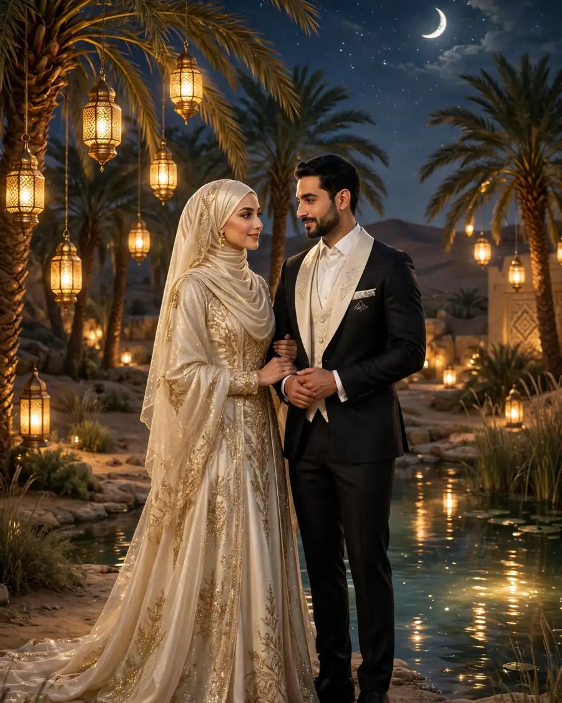
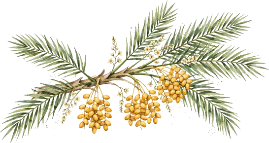
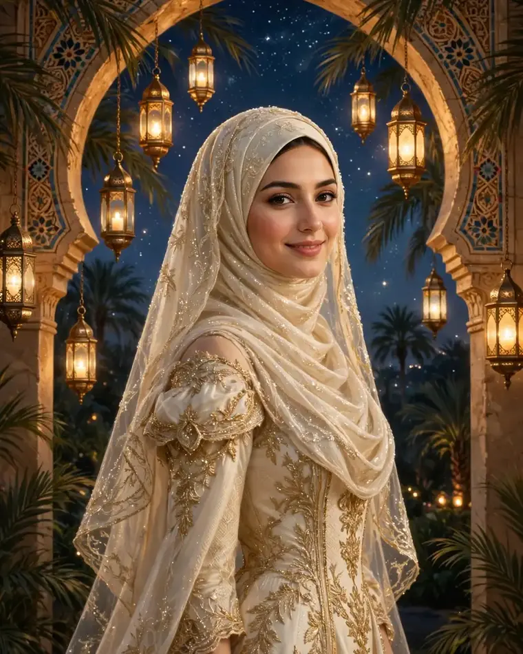
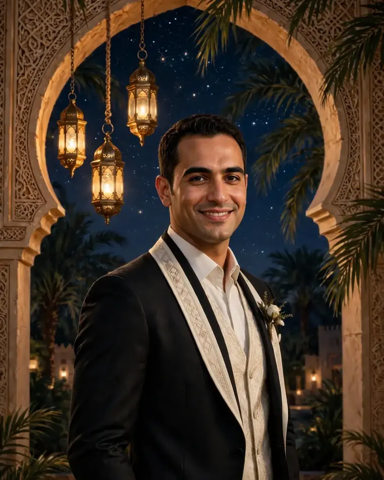
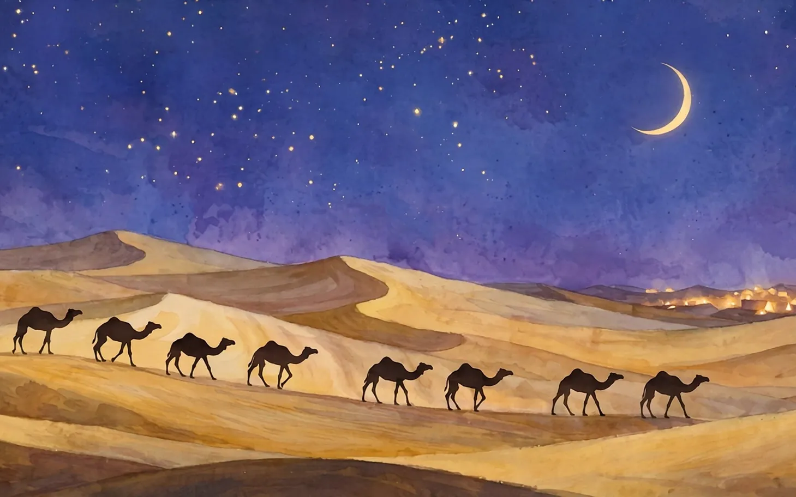
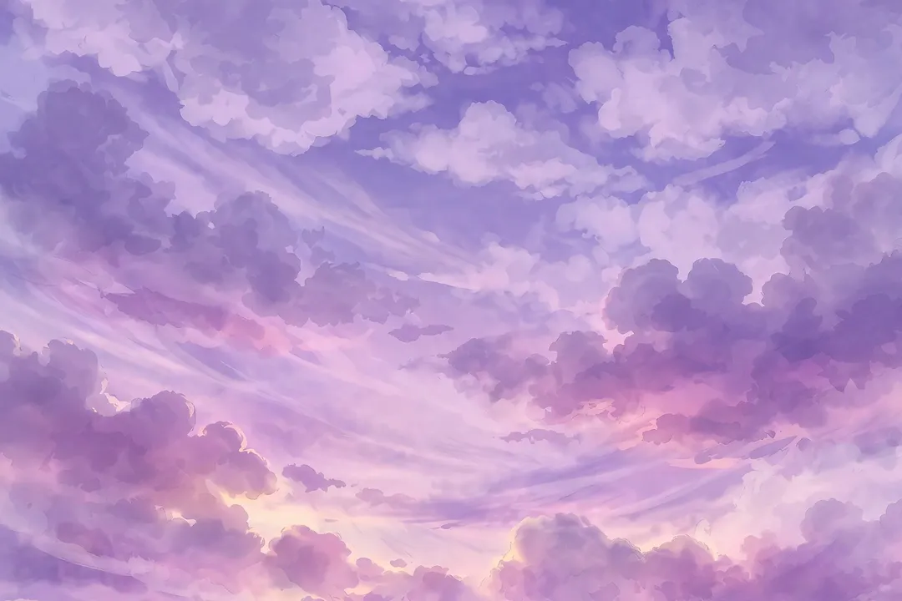

Assalamu’alaikum Warahmatullahi Wabarakatuh
Di bawah bulan yang sama, sebuah oasis ditemukan
“Dan di antara tanda-tanda (kebesaran)-Nya ialah Dia menciptakan pasangan-pasangan untukmu dari jenismu sendiri, agar kamu cenderung dan merasa tenteram kepadanya, dan Dia menjadikan di antaramu rasa kasih dan sayang.”
— QS. AR-RUM AYAT 21 —
Dengan memohon rahmat dan rida Allah SWT, kami bermaksud menyempurnakan separuh agama dalam ikatan suci pernikahan — seperti oasis yang ditemukan di tengah perjalanan panjang melintasi gurun kehidupan.

Di Bawah Kanopi Palem
Dua rumpun palem melengkung saling bertemu di atas mempelai

Di tepi kolam oasis, tempat dua perjalanan menjadi satu.


Meyzsa Putri Ananda
Putri dari
Bapak H. Muhammad Ridwan
& Ibu Hj. Siti Aminah

Ahmad Fahrezzi Pratama
Putra dari
Bapak H. Bambang Sutrisno
& Ibu Hj. Ratna Dewi
Empat Perhentian Menuju Oasis
Mengikuti garis bintang di atas dune, dari jejak pertama hingga selamanya
Di sebuah acara kampus di Jakarta, Meyzsa dan Fahrezzi pertama kali berbincang — obrolan singkat tentang buku dan perjalanan yang terasa seperti jejak pertama kafilah: kecil, tetapi menentukan seluruh arah perjalanan.
Empat tahun saling mengenal dan menjaga — seperti api unggun kecil yang dijaga bergantian di malam gurun — Fahrezzi memberanikan diri melamar Meyzsa di hadapan keluarga terdekat. Jawaban “iya” membuat api itu menyala lebih terang.
Dua keluarga besar akhirnya duduk bersama dalam kehangatan silaturahmi. Seperti kafilah yang menemukan mata air jernih setelah perjalanan panjang, restu pun mengalir dari kedua belah pihak.
Kini perjalanan itu tiba di tujuannya. Sabtu, 12 Juni 2027 — dengan doa restu Anda, kami memulai babak baru: selamanya berjalan berdua, bernaung di oasis yang sama, di bawah langit berbintang yang sama.
Linimasa & teks kisah di atas adalah contoh untuk tampilan tema.
Menuju Malam Purnama
Dari sabit tipis hingga purnama penuh
Malam ke-… menuju purnama — Sabtu, 12 Juni 2027 · Jakarta
Akad Nikah
Masjid Agung Al-Azhar
Jakarta Selatan
Resepsi
The Ritz-Carlton Jakarta, Pacific Place
Jakarta Selatan
Dresscode Tamu
Nuansa malam oasis — berkenan hadir dengan warna berikut
Panduan contoh: busana formal atau semi-formal dengan nuansa di atas akan menyatu indah dengan malam oasis. Hindari putih polos agar mempelai tetap menjadi bintang utamanya.
Denah & Info Lokasi
Petunjuk menuju perhentian terakhir kafilah

Akad Nikah — Masjid Agung Al-Azhar
Jakarta Selatan. Area parkir tersedia di lingkungan masjid. Tamu disarankan tiba 30 menit lebih awal; pintu masuk utama dari sisi jalan besar, ikuti penunjuk arah berwarna emas.
Resepsi — The Ritz-Carlton Jakarta, Pacific Place
Jakarta Selatan. Valet parking tersedia di lobi utama Pacific Place. Ballroom berada di area hotel; petugas penerima tamu akan mengarahkan Anda dari lobi.

Delapan Perhentian di Tepi Air
Bergantian bernaung kanopi palem dan bertumpu di batu sumur berpantulan air
Video Teaser
Video teaser — contoh
Video teaser — contoh, dirangkai dari foto tema dengan musik “Petals on the Stone Floor”.
Live Streaming
Untuk keluarga & sahabat yang berhalangan hadir langsung
Resepsi Pernikahan
Sabtu, 12 Juni 2027 · mulai 11.00 WIB
The Ritz-Carlton Jakarta, Pacific Place. Tombol di bawah ini adalah contoh (demo) — tautan siaran sungguhan dibagikan menjelang hari acara.
Abadikan momen bahagia Anda dan tandai dengan tagar resmi kami.
Galeri Tamu
Bagikan momen bahagia Anda selama acara — unggah foto Anda di sini dan tandai juga dengan tagar #MeyzsaFahrezzi.
Jadilah yang pertama membagikan momen — ketuk tombol unggah.
Contoh — foto tersimpan di perangkat ini saja (penyimpanan lokal peramban), tidak diunggah ke server.
RSVP & Ucapan
Papan petunjuk oasis — demo, tersimpan di perangkat ini saja
Buku Tamu & QR Check-in
Tunjukkan QR ini saat tiba — seperti tiba di sumur oasis
QR statis menuju halaman undangan ini:
https://yfarch0912.github.io/oasis-malam-preview/oasis-malam.html
Fitur demo pada contoh undangan ini — data check-in tersimpan hanya di perangkat Anda.
Amplop Digital
Nomor contoh (demo) — doa restu Anda adalah hadiah terindah
Seluruh nomor di atas adalah nomor contoh untuk keperluan demo tema.
Kediaman Mempelai Wanita (alamat contoh)
Jl. Contoh Oasis No. 12, Jakarta Selatan 12180

Turut Mengundang
Segenap keluarga besar kedua mempelai
Keluarga Mempelai Wanita
Keluarga Besar H. Muhammad Ridwan & Hj. Siti Aminah
Beserta segenap kerabat dan sahabat
Keluarga Mempelai Pria
Keluarga Besar H. Bambang Sutrisno & Hj. Ratna Dewi
Beserta segenap kerabat dan sahabat
Susunan keluarga di atas adalah contoh untuk tampilan tema.


Merupakan suatu kehormatan dan kebahagiaan bagi kami beserta keluarga apabila Bapak/Ibu/Saudara/i berkenan hadir dan memberikan doa restu kepada kedua mempelai.
KAMI YANG BERBAHAGIA
…dan di bawah bintang yang sama, kisah oasis ini pun dimulai.
Wassalamu’alaikum Warahmatullahi Wabarakatuh
Undangan digital contoh “Oasis Malam” oleh UndangYa! — seluruh nama, tanggal, dan nomor adalah data contoh.
Musik latar: “Petals on the Stone Floor”.